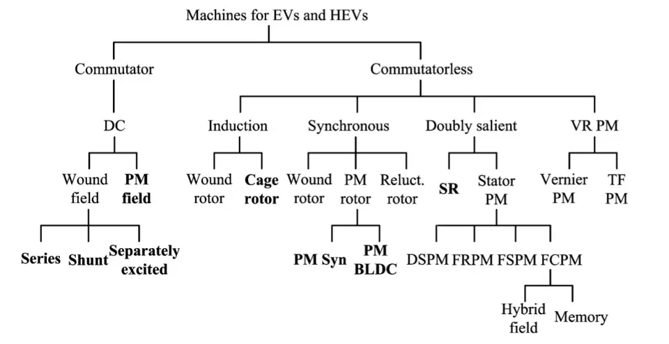
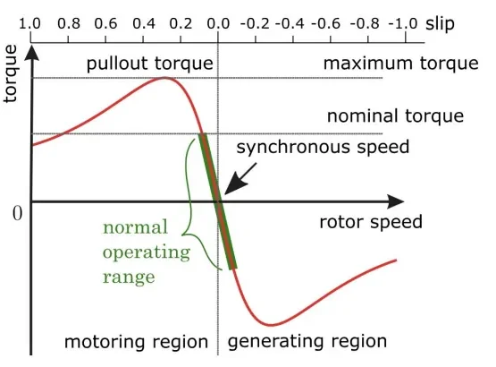
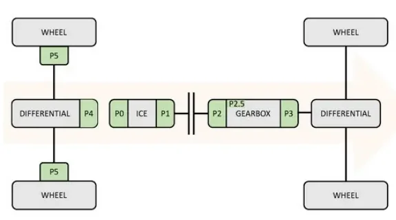

Electric Motors¶
The electric machine is the heart of every electrified powertrain: it converts the energy stored on board (battery, fuel cell) into mechanical motion, and it converts braking energy back into electricity. This article covers the ground from the MIL1 lessons on electric machines:
- how an electric drive is structured and the electromagnetic principles every machine relies on,
- the three machine families you will meet in vehicles — DC, induction and permanent-magnet brushless (plus the switched reluctance motor),
- the power converters that feed them (rectifiers, choppers, inverters) and the control strategies (V/f, FOC, PWM, six-step),
- four-quadrant operation and regenerative braking,
- where the motor sits in a hybrid powertrain (the P0–P5 classification), and what real production EVs look like.
Why automotive traction is demanding¶
The requirements for a traction machine are much stricter than for an industrial motor bolted to the floor of a factory:
- high torque and power density — the machine must fit in the vehicle and add as little mass as possible;
- wide speed range — from low-speed creeping in traffic to high-speed cruising, without a multi-speed gearbox in most EVs;
- high efficiency over a wide torque/speed area — every wasted percent is range lost;
- wide constant-power operating region (flux weakening at high speed);
- low acoustic noise;
- reasonable cost.
The electric drive system¶
The motor never works alone. An electric drive — an electromechanical system that converts electrical energy into controlled mechanical motion — has six building blocks:
flowchart LR
PS["Power source<br/>(battery / HV bus)"] --> PC["Power converter<br/>(inverter / chopper)"]
CTRL["Controller"] -->|"gate signals"| PC
PC --> M["Electric motor"]
M --> MECH["Mechanical transmission<br/>(gears, shafts, bearings)"]
MECH --> LOAD["Load (wheels)"]
SENS["Position / speed<br/>sensors"] -->|"feedback"| CTRL
M --> SENS- Power source — provides the energy (traction battery, HV DC bus).
- Power converter — interfaces the motor with the source and delivers adjustable voltage, current and/or frequency.
- Controller — compares the speed/position command with measured values and generates the control signals for the converter.
- Electric motor — chosen for the power level, environment and performance the load requires.
- Feedback sensors — return rotor position and/or speed to close the control loops.
- Mechanical components — gears, shafts, belts, bearings that bring the motion to the load.
Basic electromagnetic principles¶
Three physical laws explain every machine in this article:
- Force on a conductor. A conductor of length l carrying current I in a magnetic field B experiences a force F = B·I·l (direction given by the right-hand rule). Two conductors on opposite sides of a rotor loop form a couple — a pair of equal, opposite forces separated by a distance — whose moment is the torque τ that spins the rotor.
- Induced EMF (Faraday–Lenz). Whenever the magnetic flux through a loop changes, an electromotive force is induced that opposes the change. In a spinning motor this back EMF always fights the supply current — it is what limits the current draw and what lets the machine work as a generator.
- Magnetic flux Φ can be pictured as the number of field lines crossing an area; the denser the lines, the stronger the field and the torque.
Every electric motor has the same anatomy: a fixed stator and a rotating rotor, separated by a thin air gap where the magnetic field is most intense. Either part can carry windings or permanent magnets; torque is produced by the interaction of the two magnetic fields across the air gap.
Classification of traction machines¶

The top-level split is between commutator machines (the classic brushed DC motor, where current is mechanically switched in the rotor) and commutatorless machines (induction, synchronous, reluctance — where an electronic inverter does the switching). The rest of the article walks through the families that matter for EV/HEV propulsion.
The DC machine¶
Structure and working principle¶
The DC machine has a stator with salient poles acting as the field (inductor), built either with excitation windings carrying direct current — connected so that consecutive poles have alternating polarity — or with permanent magnets. The rotor (armature) is a cylinder of magnetic material with slots on its periphery housing the active conductors, connected in series to form a closed circuit.
The key component is the commutator, mounted on the rotor shaft: a conducting loop in a magnetic field would only oscillate if the current always flowed the same way, because the torque reverses every half turn. The commutator and the brushes sliding on it reverse the armature current every half cycle, so the torque keeps the same direction and the rotor spins continuously.
The brush–commutator system is the DC motor's weak point
Brushes wear, require continuous maintenance and produce unwanted sparking. This is why DC drives — although mature, cheap and simple to control — are no longer attractive for EV propulsion, where efficiency, power density and maintenance-free operation are mandatory.
Equivalent circuit and governing equations¶
In steady state the armature is modeled as the back EMF E in series with the armature resistance R_a (winding + brush contact):
- E = K_e · Φ · ω — the back EMF is proportional to excitation flux per pole and angular speed;
- T = K_e · Φ · I_a — torque is proportional to flux and armature current;
- V_a = E + R_a · I_a — the terminal voltage overcomes the back EMF plus the resistive drop.
From these, speed behaves as ω = (V_a − R_a·I_a) / (K_e·Φ): speed is roughly proportional to armature voltage and falls slightly as load torque increases.
Speed regulation and braking¶
There are three levers to control the speed of a DC machine, effective in different ranges and often combined:
| Method | Effect on the torque–speed characteristic |
|---|---|
| Armature voltage V_a | Shifts the no-load speed: the characteristic translates in parallel — higher V, higher ω. Only with separate excitation. |
| Excitation flux Φ | Field weakening: less flux → higher speed, less torque (constant-power region). |
| Armature resistance | Adds slope (speed droop under load); simple but dissipative. |
Armature current is controlled directly when maximum torque is demanded.
If the back EMF E is made larger than the supply voltage V, the armature current reverses while the flux polarity stays the same: torque reverses sign and the machine becomes a brake, absorbing energy from the load and returning it as electricity that can be dissipated (rheostatic braking) or recovered (regenerative braking). Combined with speed reversal, this gives four-quadrant operation:
| Quadrant | Speed | Torque | Operation |
|---|---|---|---|
| I | + | + | Forward motoring (accelerating) |
| II | − | + | Reverse braking (generating) |
| III | − | − | Reverse motoring |
| IV | + | − | Forward braking / regeneration |
Power converters for the DC machine¶
The converter choice follows the source: an AC source calls for a rectifier built with naturally commutated devices (thyristors), a DC source for a chopper built with forced-commutation switches.
AC/DC rectifiers¶
| Topology | Quadrants | Typical power range |
|---|---|---|
| Single-phase half-wave | I | light traction, just over 20 hp |
| Single-phase full-wave half-controlled | I | small/medium motors up to 75 kW (100 hp) |
| Single-phase full-wave fully-controlled | I–II (voltage reversible, current not) | small/medium drives |
| Single-phase dual converter (two bridges in anti-parallel, interlocked) | all 4 | up to ~15 kW |
| Three-phase half-controlled (semiconverter, freewheeling diode) | I | 15–150 hp |
| Three-phase fully-controlled | I–II | 15 kW up to several thousand kW |
| Three-phase dual converter (firing angles of the two bridges sum to 180°) | all 4 | 200–2000 hp |
Moving from single-phase to three-phase bridges lowers voltage/current ripple (smoother torque) and reduces the risk of discontinuous conduction. The half-wave single-phase circuit needs only one power switch plus a freewheeling diode across the motor — the diode dissipates the energy stored in the motor inductance and gives the current a path while the switch commutates — but it delivers poor motor performance.
DC choppers¶
A chopper converts a fixed DC input into a variable DC output — the DC equivalent of an AC transformer. Choppers offer high efficiency, fast response and regeneration capability, and are built with switches such as power BJTs, MOSFETs, IGBTs (also GTO/MCT or force-commutated thyristors).
| Class | Name | Quadrants | Behavior |
|---|---|---|---|
| A | step-down (buck) | I | output ≤ supply voltage |
| B | step-up (boost) | IV | output > input; stores energy in the inductor while the switch is on, returns it to the source when off — the regenerative braking path |
| C | buck-boost (half-bridge) | I–IV | S1/D1 act as buck, S2/D2 as boost |
| D | — | I–II | S1+S2 on → V_a = V (motoring); one switch + one diode → V_a = 0 (recirculation); both diodes → braking |
| E | full-bridge | all 4 | bidirectional current with positive or negative armature voltage — full motoring and regenerative braking in both directions, controlled by PWM duty cycle |
The induction machine (IM)¶
The induction motor is the simplest and most reliable AC machine — the most widely used motor in consumer and industrial markets, available from a few watts to many kilowatts. Being commutatorless, it avoids the DC motor's cost, maintenance and robustness problems.
Structure and working principle¶
The dominant type is the squirrel-cage IM:
- a stator with three-phase armature windings;
- a rotor made of conductive bars short-circuited by two end rings (the "cage");
- bearings, frame and end bells.
Feeding the three-phase stator windings creates a rotating magnetic field in the air gap — picture a chain of north–south poles revolving around the stator at the synchronous speed ω_s, fixed by the supply frequency and the number of pole pairs p: ω_s = 2πf / p.
The rotor turns slower than the field (hence "asynchronous"). Because of this relative motion, the flux linkage through the rotor cage changes and currents are induced in the bars (Faraday's law). These currents build a rotor field that opposes the flux variation and interacts with the stator field, producing torque. The normalized speed difference is the slip s = (ω_s − ω_r) / ω_s.
Torque–speed behavior¶

- At synchronous speed (s = 0) no current is induced in the rotor, so no torque is produced.
- Rotor slower than the field (s > 0) → motoring; rotor faster (s < 0) → generating.
- The peak of the curve is the pullout torque; nominal torque is conventionally half of it, and the machine normally works in the linear region between the positive and negative nominal torque.
The per-phase equivalent circuit models stator resistance and leakage reactance (R_s, X_s), rotor resistance and leakage reactance at standstill referred through the turns ratio k (R_r, X_r), and the magnetizing branch (R_m for core losses, X_m magnetizing reactance).
Control: from V/f to FOC¶
- V/f (scalar) control — keeps voltage proportional to frequency so the flux stays constant. Simple and still common in industrial drives, but it acts only on the magnitude of the quantities, not their phase — dynamic performance is limited.
- Field-Oriented Control (FOC) — the three instantaneous AC quantities are projected, via the Park–Clarke transformations (ABC three-phase → αβ stationary two-phase → dq frame rotating with the rotor field), into two DC quantities: a flux-producing current component and a torque-producing one. Controlling them independently gives the induction machine DC-machine-like torque controllability.
Why FOC dominates EV drives
FOC delivers high efficiency (stator and rotor fluxes aligned for best torque production), high dynamic response (voltages, currents and fluxes controlled in magnitude and phase), low torque ripple, independent flux and torque control, a wide constant-power range through flux weakening, and high starting torque with low starting current — with four-quadrant operation.
The inverter¶
EV traction inverters are almost exclusively voltage-fed three-phase full-bridge designs (current-fed inverters need a large series inductance and are rarely used). Two switching strategies matter:
- Sinusoidal PWM — a sinusoidal modulating wave (amplitude A_s, frequency f_s) is compared with a triangular carrier (A_t > A_s, f_t ≫ f_s). When the modulating wave exceeds the carrier, the upper switch of that phase leg turns on; otherwise it turns off. The result is width-modulated pulses whose fundamental reproduces the wanted sine wave; implementable in analog or digital form.
- Six-step (square wave) — each switch is closed for half a period and the inverter changes state every T/6, cycling through the six active states (101), (100), (110), (010), (011), (001). The output amplitude depends only on the DC-link voltage V_CC and the switch states.
Power-device selection rules for the IGBT-based inverters used in modern EVs:
- voltage rating at least twice the nominal battery voltage;
- current rating large enough to avoid paralleling devices;
- switching speed high enough to suppress motor harmonics and acoustic noise.
The wound-rotor variant of the IM is less attractive than the squirrel cage (cost, maintenance, ruggedness), so "induction motor for EVs" effectively means the squirrel-cage type — low cost and ruggedness outweigh its control complexity. Production example: the 2020 Mercedes-Benz EQC uses two induction motors.
Permanent-magnet brushless machines¶
PM brushless drives — above all the PM synchronous drive — are currently the most attractive technology for EV propulsion and dominate market share, thanks to high power density and high efficiency from high-energy PM materials. Their shortcomings are the cost and the thermal instability of the magnets.
The family splits in two by the shape of the back EMF at the air gap:
| PMSM (PM synchronous) | BLDC (brushless DC) | |
|---|---|---|
| Back EMF / current waveforms | sinusoidal | trapezoidal EMF, rectangular currents |
| Inverter | voltage-fed (VSI), PWM — typically space-vector modulation | current-fed style, stepwise (six-step-like) |
| Commutation | continuous, field-oriented | electronic, in strokes keyed to rotor position |
| Torque production | reaction torque (PM flux × q-axis current) + reluctance torque (L_d ≠ L_q) | each phase EMF is a bipolar trapezoid displaced 120° electrical; currents 120° positive / 120° negative keep synchronism without torque pulsations |
| Strengths | higher efficiency, lower torque ripple, more mature | higher power and torque density |
| Modeling | rotor d–q reference frame | d–q not applicable (nonsinusoidal flux) — per-phase state model with phase voltages, currents, back EMFs, armature resistance R and mutual inductances L_ij |
Both share the same basic structure — a star-connected three-phase stator winding and a rotor carrying permanent magnets — which is simpler than the induction rotor (no cage bars or end rings). In the PMSM the rotor spins at synchronous speed, locked to the stator field. The BLDC is essentially a DC motor turned inside out: electronic commutation replaces brushes and produces unidirectional torque the same way the commutator did.
Control follows the waveforms: the PMSM inherits induction-machine strategies (FOC, direct torque control), plus flux weakening — essential because the PM excitation cannot be turned down — and position-sensorless control to eliminate the costly encoder. The BLDC, driven with the stator flux kept near 90° from the rotor flux, naturally gives maximum torque per ampere in the constant-torque region using 120° two-phase or 180° three-phase conduction; for constant-power cruising it needs phase-advance angle control, and sensorless schemes are actively developed for it too.
Switched reluctance motor (SRM)¶
The SRM produces torque purely by reluctance: its rotor is a solid salient-pole piece of soft magnetic material with no magnets and no windings. Energizing a stator phase pulls the nearest rotor pole into alignment; switching the phases in sequence keeps the stator field ahead of the rotor and drags it around. Simple, reliable and cheap with good efficiency and power density — but noisy, with higher torque ripple, lower power factor and poorer speed control.
Four-quadrant operation and regenerative braking¶
EV propulsion needs all four quadrants: forward motoring, forward regeneration, backward motoring and backward regeneration. Quadrants I and IV share the positive phase sequence A-B-C; III and II use the reversed sequence A-C-B.
Regeneration pays for range
Forward regeneration converts braking energy back into battery charge and can increase driving range per charge by over 10% — one reason every EV traction inverter is designed for bidirectional power flow.
Choosing the motor: comparison¶
| DC (brushed) | Induction (squirrel cage) | PMSM / BLDC | SRM | |
|---|---|---|---|---|
| Power/torque density | low | poor | high | good |
| Efficiency | moderate | high at low–medium speed, poor at high speed | high | good |
| Robustness / maintenance | poor (brushes, sparking, wear) | simple, robust, low maintenance | maintenance-free but temperature-sensitive magnets | very simple, high reliability |
| Cost | cheapest | low | high (magnets) | low |
| Control complexity | simplest | complex (FOC) | more complex | moderate |
| EV role today | legacy | some EVs (e.g. Mercedes EQC) | preferred technology | niche |
Where the motor sits: hybrid architectures (P0–P5)¶
In hybrids, the Px code names the electric motor's position in the powertrain — the number roughly tracks the distance between the motor and the wheels, decreasing from P0 to P5.

| Config | Motor position | Pros | Cons |
|---|---|---|---|
| P0 | Belt-driven Starter Generator (BSG) replacing the alternator, e.g. Audi 48 V system (DC-DC, 12 V + 48 V batteries, integrated BSG) | Cheapest; no change to vehicle/transmission architecture; drops into the existing accessory belt | Belt mechanically ties EM to ICE → friction losses; belt slip limits torque (12 V starter kept for cold starts); belt durability |
| P1 | On the crankshaft, same speed as the engine | No belt: slightly better efficiency, more torque and faster response; electric creeping | Crankshaft/engine redesign; EM still on ICE side (no disconnection); higher cost |
| P2 | Between engine and transmission, with a clutch to decouple the ICE (e.g. Porsche Panamera with ZF transmission) | Full-electric drive with clutch open; recuperation without dragging the ICE; electric creep and e-coasting | High integration cost; larger battery; conventional starter still needed for S&S |
| P2.5 | Inside a dual-clutch transmission, on the even-gear shaft | Easy integration (same ICE); electric drive via the even shaft; combined ICE+EM modes | Requires a DCT; starter still needed unless combined with P0 |
| P3 | Downstream of the gearbox | Minimized losses — EM drives only the final part of the transmission | Transmission limits both propulsion and recuperation efficiency |
| P4 | On the axle not driven by the ICE (e.g. Toyota Prius IV with induction EM + inverter) | Electric AWD with no mechanical link to the engine; easy pure-electric mode; highest recuperation potential | Larger battery/motor/electronics; S&S inhibited without an engine-side motor |
| P5 | In-wheel motors | No "distance" at all | Still limited production application |
Two practical notes from the lessons:
- P2–P4 configurations place the EM after the clutch, which inhibits the classic start&stop function — hence combined P1+P2 / P1+P4 layouts that add an engine-side motor to restore S&S and enable load shift and torque assist, at the price of exponentially higher complexity and cost.
- Typical fuel-efficiency gains: P1 around 10%; P3/P4 up to 25% on standard cycles (more in urban driving). In P0, power electronics are often integrated into the motor; from P1 up, liquid cooling is required (air cooling is not feasible for driveline-mounted machines).
The vehicle categories built on these blocks: MHEV (mild hybrid — ICE drives, compact EM assists), FHEV (full hybrid — short full-electric stretches at low speed), PHEV (plug-in — larger battery charged from the grid, 40–60 km zero-emission urban range), BEV (battery electric — the simplest powertrain, needs an onboard charger), and FCEV (same electric powertrain as BEV, energy from a fuel cell — e.g. Toyota Mirai).
The traction battery in one page¶
The lessons include a battery primer, since the battery is the source every drive hangs from:
- Key quantities — open-circuit voltage (terminals at zero current), capacity (Ah), mass energy density (Wh/kg or kJ/kg), power density (W/kg), cycle life (standard cycles until capacity falls below 80%), C-rate (current relative to capacity: 5000 mA out of a 500 mAh cell = 10C), SOC (available / maximum capacity), nominal voltage (at 50% SOC, 0.2C discharge).
- Chemistries — lithium (traction; cell OCV 2.5–4.3 V, >500 kJ/kg, cycle life 2500–12 000, but expensive and thermal-runaway-prone), lead-acid (12/24 V auxiliaries; cheap, robust, >99% recyclable, huge burst currents, ~140 kJ/kg, 50–100 cycles), NiMH (older hybrids such as pre-2015 Prius; safe and cheap but lower density). For contrast: gasoline stores ~44 000 kJ/kg.
- Behavior — terminal voltage and harvestable energy fall as discharge current rises; the simplest model is an ideal source with a series resistance (ESR), both SOC- and temperature-dependent. Aging raises ESR (more self-heating, deeper voltage sag) and shrinks capacity. Ideal operating window is 20–30 °C; above 55 °C is dangerous; extreme cold can make lithium packs unusable or unchargeable.
- Pack design — cells in series raise voltage (packs up to 800 V; same current through every cell, so one weak cell jeopardizes the whole string); strings in parallel raise capacity/current (same voltage, but mismatched SOC or temperature causes back-currents and overload between packs on the HV bus). High voltage keeps ohmic losses low.
- BMS — the ECU that connects/disconnects the packs to the HV bus, balances cells, requests cooling/heating, estimates SOC and SOH (ESR is a degradation indicator), enforces max charge/discharge currents, and runs diagnosis: over/undervoltage, overcurrent, overtemperature, insulation measurement.
Production EV reference points¶
The lessons close with real cars — useful to anchor the theory:
| Vehicle | Power | Battery | DC fast charge |
|---|---|---|---|
| Audi e-tron | 370 kW AWD, 973 Nm | 95 kWh (86.5 usable), 400 V, liquid-cooled | CCS 150 kW, 0–100% in 50 min |
| Mercedes EQC 400 | 300 kW AWD | 84.5 kWh (80 usable), 400 V, air-cooled | CCS 110 kW, 10–80% in 40 min |
| Tesla Model S LR | 415 kW AWD | 100 kWh, 350 V, liquid-cooled | Supercharger V3 250 kW, 10–80% in 30 min |
| Porsche Taycan | 300 kW RWD | 93.4 kWh (83.7 usable), 800 V, liquid-cooled | CCS 270 kW, 5–80% in 22 min |
| BMW iX3 | 210 kW RWD | 80 kWh (74 usable), 400 V, air-cooled | CCS 150 kW, 10–80% in 34 min |
| Renault Megane E-Tech | 96 kW FWD | 40 kWh usable, 352 V, liquid-cooled | CCS 85 kW |
Note the trend the pack section predicted: higher-voltage systems (Taycan at 800 V) charge much faster because the same power needs less current.
Key takeaways
- An electric drive = source + converter + controller + motor + sensors + mechanics; the converter and its control are what make the motor usable.
- DC machines are simple and cheap but brushes kill them for EVs: V_a controls speed, I_a controls torque, and E > V turns the machine into a regenerative brake.
- Induction machines are rugged and cheap; torque comes from slip, and FOC (via Park–Clarke dq transforms) gives them DC-like controllability.
- PM brushless (PMSM/BLDC) is the preferred EV technology — highest efficiency and power/torque density — at the price of magnet cost and temperature sensitivity.
- Traction inverters are voltage-fed IGBT full bridges rated at ≥ 2× battery voltage, switching with sinusoidal PWM / space-vector modulation or six-step, and must run all four quadrants — regeneration adds >10% range.
- In hybrids, the P0–P5 code tells you where the motor sits, from belt starter-generator (P0) to in-wheel (P5); capability (recuperation, electric drive, e-AWD) grows as you move toward the wheels, and so do cost and integration effort.
Where this leads
See how these machines are arranged in complete vehicles in HEV/BEV Architectures and Hybrid Architectures, and where the high-voltage system fits in the car in E/E Architecture.
Source material¶
This article was distilled from the academy lesson materials:
- :material-file-pdf-box: CORRUPT BATTSBEVHEV — PDF, 221.0 KB
- :material-file-pdf-box: EM DC Motor — PDF, 1.8 MB
- :material-file-pdf-box: EM Induction Motor — PDF, 1.6 MB
- :material-file-pdf-box: EM PMSM — PDF, 1.3 MB
- :material-file-pdf-box: EM Power Converters — PDF, 1.6 MB
- :material-file-pdf-box: Electric Machines 1 — PDF, 2.6 MB
- :material-file-pdf-box: Electric Machines 2 — PDF, 2.9 MB